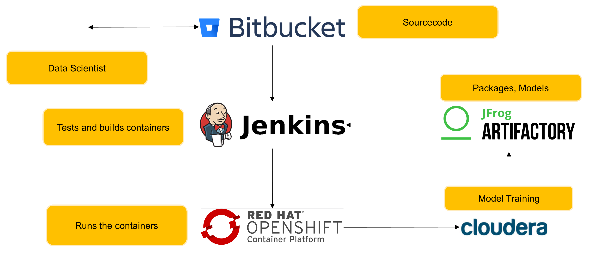

Content
- What is Shiny anyway?
- How does Shiny compare to…
- How does Shiny work?
- How to deploy Shiny?
- Examples


Source: shiny.rstudio.com
Source: tableau.com/solutions
Most of the time you will start with some kind of analysis…

ggplot(mpg, aes(displ, hwy, colour = class)) + geom_point()
shinyApp(ui, server)ui = fluidPage(
selectInput("manufacturer", "Manufacturer:",
choices = levels(as.factor(mpg$manufacturer))),
plotOutput("mpgplot")
)fluidPage()returns
<div class="container-fluid"></div>server = function(input, output) {
output$mpgplot = renderPlot({
ggplot(mpg[mpg$manufacturer == input$manufacturer,],
aes(displ, hwy, colour = class)) +
geom_point()
})
}library(shiny)
library(ggplot2)
shinyApp(
ui = fluidPage(
selectInput("manufacturer", "Manufacturer:",
choices = levels(as.factor(mpg$manufacturer))),
plotOutput("mpgplot")
),
server = function(input, output) {
output$mpgplot = renderPlot({
ggplot(mpg[mpg$manufacturer == input$manufacturer,],
aes(displ, hwy, colour = class)) +
geom_point()
})
}
)

| Package | Desc |
|---|---|
| shiny | basepackage |
| ggplot2 | for graphs |
| plotly | for interactive graphs |
| r2d3 | integrate D3 visualizations into shiny |
| shinyWidgets | custom input widgets |
| shinycssloaders | custom loading animations üòÖ |
| leaflet | for maps |
| Package | Desc |
|---|---|
| shinydashboards | Bootstrap3 dashboard |
| bs4Dash | Bootstrap4 ftw! |
| shinymaterial | Material dashboard |
Dr. Jens Hofmann
Lead Data Scientist CX, Marketing
Versicherungskammer
Email: jenshofmann@outlook.de
Twitter: @Je_Hofmann